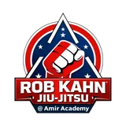

About Amir Academy
Five decades of martial arts mastery and 41+ years serving St. Petersburg — meet the family, the philosophy, and the coaches behind the academy.

We Build Champions
56 Years in Martial Arts
41+ Years Serving St. Petersburg, Florida
Amir Academy of Martial Arts is built on decades of real experience, discipline, and uncompromising standards. Founded on traditional values and evolved through modern combat sports, our academy develops confidence, character and physical excellence for students of all ages.
We don't follow trends. We build foundations.
With 56 years of martial arts experience and over 41 years in business, Amir Academy has become one of the most respected martial arts institutions in St. Petersburg, Florida. Our programs are designed to create strong individuals—mentally and physically—through structured training, accountability, and respect.
- Discipline over motivation
- Respect over ego
- Technique before intensity
- Community before hype
We train kids, teens, and adults in Kickboxing, Jiu-Jitsu, and MMA, guided by professional instruction and decades of real-world experience.
THIS IS MORE THAN A GYM — It's a place where confidence is built, limits are tested, and character is forged.
Train with purpose. Live with confidence.
Meet the Coaches
Hall-of-fame instructors, world champions, and decades of combined experience — the people who make Amir Academy what it is.

Amir Ardebily
Amir Ardebily is a 7th Degree Black Belt and lifelong martial artist with over five decades of experience in combatives, defensive tactics, and high-level martial instruction. He is the Founder and Head Instructor of Amir Academy of Martial Arts, established in 1985, one of the longest-running martial arts and combatives training institutions in the Tampa Bay area.
Amir's background combines traditional martial arts with modern, operationally effective combat systems. His training includes Shaolin Kung Fu, with time spent training at the Shaolin Temple, where discipline, structure, and mental conditioning are emphasized. He has also trained in Iaido (Japanese sword discipline) and Sansho, developing precision, situational awareness, and controlled application of force—skills directly applicable to professional use-of-force environments.
In addition to traditional systems, Amir has extensive experience in kickboxing and full-contact combat sports, providing him with practical, pressure-tested knowledge of timing, stress response, and real-world engagement. He has trained and developed multiple world champions and is widely respected for producing disciplined, technically sound practitioners capable of performing under extreme conditions.
Professionally, Amir has trained federal agents in hand-to-hand combat and defensive tactics, focusing on close-quarters control, weapon retention, threat neutralization, and decision-making under stress. He has worked for years with SWAT teams, delivering training tailored to high-risk operations, team movement, and rapid escalation scenarios, with emphasis on safety, control, and accountability.
Amir has also had the honor of providing protective security detail for Governor Jeb Bush, reflecting the level of trust placed in his professionalism, judgment, and operational competence.
Beyond direct instruction, Amir is the founder and long-time promoter of the Battle of Tampa Bay championship series, one of Florida's longest-running kickboxing and MMA events, contributing to the development of high-level fighters and strengthening the regional combat sports and training community.
In recognition of his lifetime contributions to martial arts, combatives, and professional training, Amir Ardebily was inducted into the Florida Mixed Martial Arts Hall of Fame, Class of 2025.
Amir's professional philosophy is clear and uncompromising: Effective training must be realistic, disciplined, legally sound, and operationally relevant.

Rob Kahn
Rob Kahn is one of the most accomplished and respected figures in American Jiu-Jitsu, MMA, and combatives training. A 4th Degree Black Belt under Royce Gracie, Rob Kahn represents a direct lineage to the origins of modern Brazilian Jiu-Jitsu and mixed martial arts.
Before his Jiu-Jitsu career, Rob was a 1995 New York State Golden Gloves Champion, later transitioning into a successful run as a professional MMA fighter. His deep understanding of both striking and grappling has made him a complete and highly effective coach.
In 2014, he was named North American Grappling Association (NAGA) Instructor of the Year, a recognition of his exceptional impact as a teacher and mentor. Over the course of his career, Rob has produced more than 20 fighters who have gone on to compete in the UFC and ADCC World Championships, a testament to his elite coaching ability.
Beyond sport, Rob Kahn served as Head Combatives Instructor for SOCOM (Special Operations Command) and SOC-CEN (Special Operations Command Central) at MacDill Air Force Base in Tampa, training some of the most elite military personnel in real-world combat and defensive tactics.
Rob is also the founder of the Gracie Tampa schools and has been inducted into the Florida MMA Hall of Fame, cementing his legacy as a pioneer, leader, and standard-bearer in martial arts instruction.


Fariba Kiani
Fariba Kiani is an ACE & AAMA certified Personal Trainer, Cardio Kickboxing Instructor, and the General Manager of Amir Academy of Martial Arts. She leads high-energy fitness programs while overseeing daily operations, combining professional leadership with a passion for empowering students of all levels.
Jamarkus Anderson
Jamarkus Anderson is a 4th Degree Black Belt and one of the most seasoned instructors at Amir Academy of Martial Arts, with over 25 years of dedicated training at the academy. A highly respected expert in MMA and Kickboxing, Jamarkus brings decades of real-world experience, discipline, and precision to every class he teaches.
In addition to his combat sports mastery, Jamarkus is the academy's exclusive Firearms Instructor, specializing in self-defense, tactical readiness, and responsible firearms training. His approach blends physical conditioning, situational awareness, and mental preparedness—ensuring students are trained not just to fight hard, but to protect smart.
Recognized for his professionalism, leadership, and commitment to student safety, Jamarkus Anderson is your local specialist for self-defense, tactical training, and firearms education.
TRAIN HARD. PROTECT SMART.


Nick Cornelius
Nick Cornelius is a 3rd Degree Black Belt under Amir Academy of Martial Arts and one of the academy's most accomplished fighters and instructors. With over 23 years of training at Amir Academy, Nick represents the highest level of discipline, loyalty, and competitive excellence.
A dominant ISKA Super Heavyweight World Champion, Nick holds an impressive 12–0 record with 9 knockouts, establishing himself as a powerful and technically refined striker at the world-class level. Competing in the super heavyweight division, his experience in elite competition translates directly into high-level instruction.
As an expert MMA and Kickboxing instructor, Nick is known for his ability to develop fighters with precision, confidence, and a winning mindset. His coaching blends advanced technique, fight IQ, and real championship experience—preparing students to perform under pressure and compete at the highest levels.
TRAIN TO WIN. TRAIN WITH THE BEST.
Rasa Lukosiute
Rasa Lukosiute is a 2nd-degree black belt under Amir Academy, with over 20 years of experience in training, competition, and instruction. Her skill set spans Kickboxing, MMA, and Jiu-Jitsu, making her a well-rounded and highly respected martial artist. Known for her discipline, loyalty, and leadership, Rasa is not only an exceptional instructor and fighter, but also one of the most valuable and trusted members of the Amir Academy family.


Alex Petrovich
Alex Petrovich is one of Amir Academy's most respected leaders and a proud U.S. Army veteran. Holding a 2nd Degree Black Belt under Master Amir Ardebily, Alex brings over 33 years of martial arts experience to the mat.
His extensive background in boxing and kickboxing has shaped him into a highly skilled striker with deep technical knowledge and real fight experience. Discipline, toughness, and composure — qualities sharpened through both military service and decades of training — define his approach to coaching and leadership.
As a key coach for Amir Academy's fight team, Alex helps develop athletes physically, mentally, and strategically for competition. His calm presence, high standards, and unwavering commitment make him an incredible asset to our academy.
Alex embodies everything Amir Academy stands for: Honor. Discipline. Loyalty. Service.
His dedication — both to his country and to the art — makes him not only a coach, but a true pillar of our martial arts family.
Doug Hensel
Doug Hensel began his martial arts journey at Amir Academy of Martial Arts at just 16 years old. Through years of dedication, discipline, and relentless consistency, Doug rose through the ranks to earn his 1st Degree Black Belt.
Today, Doug is one of the top instructors for the Teen MMA program at Amir Academy, known for his ability to connect with young athletes while demanding focus, respect, and accountability. He plays a key role in developing not only skilled fighters, but confident, disciplined young leaders.
Doug proudly serves as a full instructor at Amir Academy, passing on the mindset, values, and work ethic that shaped his own path. Martial arts has become a family legacy for Doug, as his son now trains at Amir Academy as well, continuing the tradition of discipline and growth across generations.
Doug Hensel embodies what Amir Academy stands for: loyalty, perseverance, leadership, and lifelong commitment to the martial arts.


Brandon Spenser
Brandon Spenser is an active fighter at Amir Academy and a proud member of the Amir Academy Fight Team. Known for his discipline, consistency, and team-first mentality, Brandon represents the next generation of dedicated martial artists rising through the ranks.
As both a competitor and mentor, Brandon serves as an Assistant Instructor for Kids and Adult MMA classes, helping students develop strong fundamentals in striking, grappling, and overall fight conditioning. His leadership on the mat reflects the same focus and work ethic he brings to his own training.
Under the guidance of Amir Ardebily, Brandon has earned his Green Belt (1st Stripe) — a testament to his technical growth, discipline, and commitment to the academy's standards.
In Brazilian Jiu-Jitsu, Brandon holds a Blue Belt (2 Stripes) under Rob Kahn, further strengthening his ground game and competitive skill set. His cross-training in both striking and grappling makes him a well-rounded mixed martial artist and a strong asset to the fight team.
Brandon continues to actively compete, sharpen his craft, and support his teammates, embodying the values of hard work, respect, and perseverance that define Amir Academy.
Whether in the cage, on the mats, or leading a class, Brandon Spenser represents dedication in action.
Ready to Join?
Have questions or want to get started? Reach out to us directly — your first class is free.
Contact Us